氣功ビデオ講座 3月号
力を入れずに、
楽に立つ。氣功のはじめの一歩
姿勢を正そうとするほど、なぜか疲れてしまう。そんな方へ。
骨格の上に体を乗せて、力みに気づき、自然に力が抜ける「立ち方」を動画で学びます。
- 形式動画講座
- 収録時間約28分
- 準備椅子を1脚
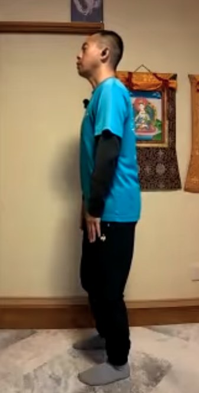
こんなこと、ありませんか？
- 背筋を伸ばそうとすると、肩や腰がこわばってくる
- 立っていても座っていても、なんとなく疲れやすい
- 氣功を始めたいけれど、最初の姿勢で迷ってしまう
- 「力を抜いて」と言われても、抜き方がわからない
それは、頑張って姿勢を「作ろう」としているからかもしれません。
氣功の立ち方の考え方
姿勢は「作る」のではなく、
正しい位置に「乗る」
氣功の型は、姿勢や形を取ること自体に意味があります。その一つひとつに、氣の流れを良くする秘訣が入っています。だから、いちばん初めの立ち方がとても大切です。
脱力は、だらんとすることではありません。関節を動かす筋肉（アウターマッスル）をあまり使わず、体の内側を支える筋肉（インナー）はしっかり使う。そのために必要なのが、骨格の上に体が乗っていることです。
脱力しようとするのではなく、正しい姿勢を作ることで、結果として脱力する。この順番を、動画でていねいにお伝えします。
この講座で学ぶこと
5つのステップで、
「楽に立てる位置」を見つけていきます
-
1
膝と股関節を、一緒に緩める
「膝を緩めて」と言われて、膝だけを曲げると体が斜めに崩れてしまいます。股関節も一緒に曲げて、体が真下にすっと下がる感覚をつかみます。
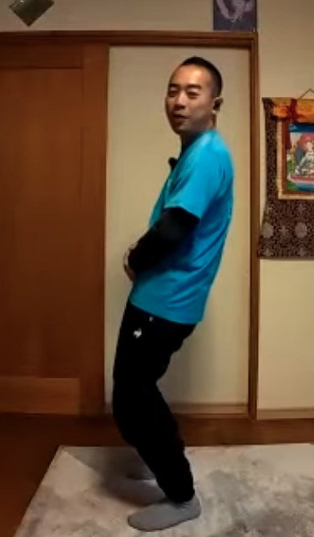
膝だけ緩めた例（上体が斜めに） 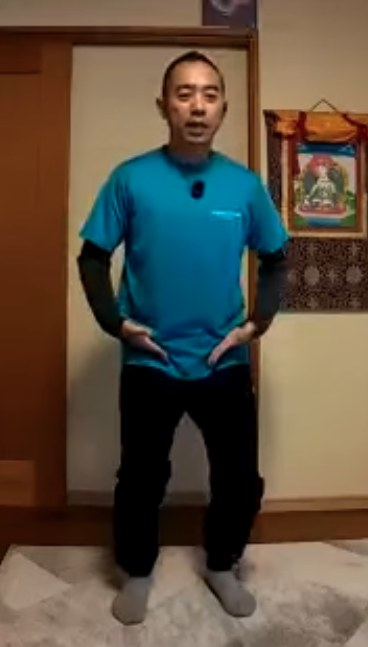
股関節の真上に体幹を乗せる -
2
肩と肘を落として、力みを手放す
肘が上がると、肩・首・顎へと力みが広がります。肘を体の近くに置くと、腕は力を使わずにぶら下がります。腕から肩、首まわり、胸へと、脱力が広がる感覚を確かめます。
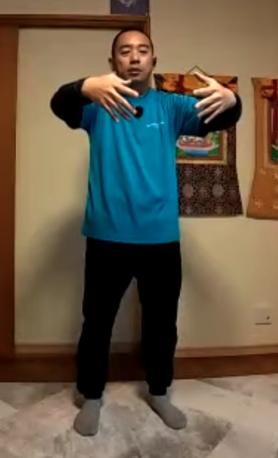
肘が上がった状態 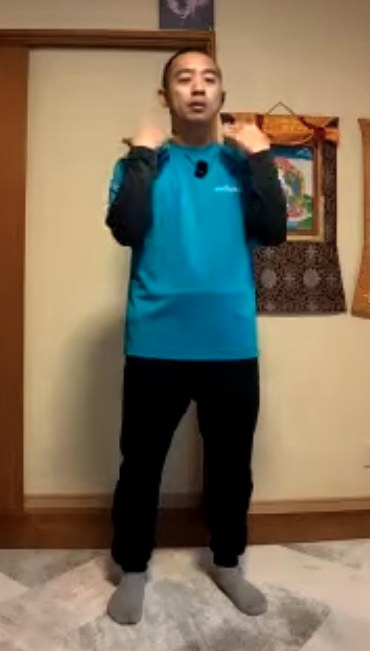
肘を下げた状態 -
3
椅子に座って、「楽な位置」を探す
いきなり立つ前に、椅子に座って練習します。股関節を支点に体を前後にわずかに傾け、前にも後ろにも余計な力が入らない場所を見つけます。座って疲れたときにも使える方法です。
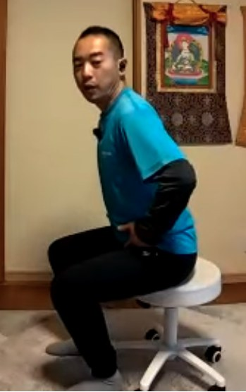
前に傾ける 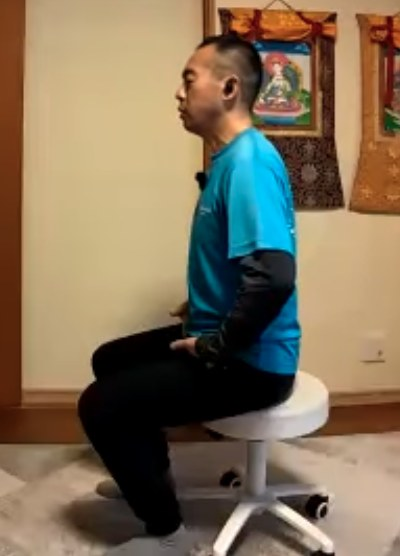
楽な位置 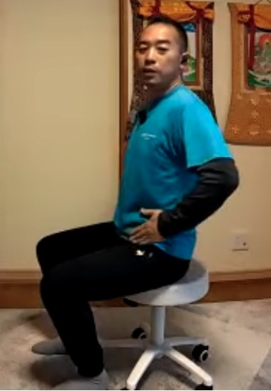
後ろに傾ける -
4
立って、足裏の上に乗る
座って見つけた感覚を、立った状態に移します。足首だけで体を前後に動かし、足首まわりに力が入らない一点を探します。ほんの数ミリの違いを、目を閉じて感じ取ります。
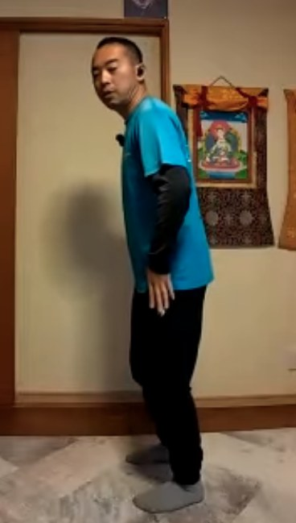
足首だけで前に倒す 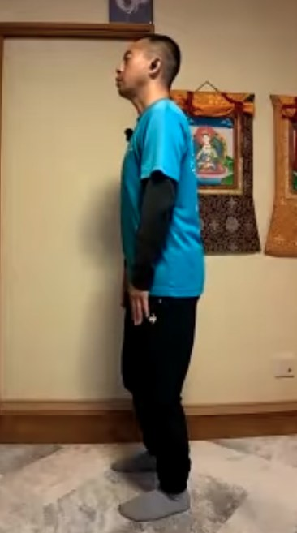
足裏の上に乗った姿勢 -
5
足の親指で、地の氣を引き上げる
足の親指で地面をくっと噛み、土踏まずのアーチをつくります。一本の木になって、根が地面に深く伸びていくイメージで、意識を下へ置きます。「親指だけに力を入れるのが難しい」ときのコツもお話しします。
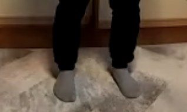
足元の様子
この講座の特長
動画だから、体の「細かな違い」が見えます
比べて分かる
崩れた例と整った例、肘が上がった状態と下がった状態を見比べながら、違いを目で確かめられます。
座って、立って、段階式
まず椅子で感覚をつかみ、次に立つ。ステップを踏むので、初めての方も迷いにくい流れです。
日常に持ち帰れる
立つときも座るときも使える考え方です。「乱れているな」と感じたら、その場で楽な位置に体を乗せ直せます。
正解を探すのではなく、
自分の体で「あ、ここだ」と気づくこと。
講師
神田 一郎（かんだ いちろう）
富士山のふもとで、氣功を教えています。リハビリの現場での経験と、ご自身の体と向き合ってきた歩みを土台に、「なんでもOK、オールOK」の気持ちで、無理なく続けられる氣功をお伝えしています。
この講座でも、うまくできているかどうかを気にするより、まずは自分の体に気づくことを大切にしています。
講座の概要
- 講座名
- 氣功ビデオ講座 3月号「氣功を始める第一歩（立ち方）」
- 形式
- 動画講座（講師と受講者の対話形式）
- 収録時間
- 約28分
- 内容
- 膝と股関節・肩と肘の使い方／椅子での練習／足裏の上に乗る立ち方／足の親指のワーク
- 準備するもの
- 椅子（座って行う練習があります）、動画を見ながら立てる広さ
- 価格
- 8,800円（税込）
- 視聴方法
- Vimeo（お支払い完了後、いつでもご視聴いただけます）
- お支払い
- PayPal
氣功ビデオ講座シリーズ
段階を踏んで、少しずつ深めていく
月ごとに、内容がつながっていくシリーズです。3月号は、その最初の一歩になります。
- 3月号氣功を始める第一歩（立ち方）この講座
- 4月号補と瀉（腕の氣を通す訓練）
- 5月号より大きく氣を動かす
- 6月号天地の氣と繋がるための準備
- 7月号天地を繋ぐ その2
- 8月号天地を繋ぐ その3
- 9月号意念と氣の法則と氣感
よくあるご質問
氣功が初めてでも受講できますか？
はい。3月号はシリーズの最初の講座で、氣功を始める第一歩として、立ち方の基本から順に進めます。
準備するものはありますか？
椅子を1脚ご用意ください。座って「楽な位置」を探す練習があります。あとは、動画を見ながら立てるスペースがあれば大丈夫です。
4月号以降も購入する必要がありますか？
各月号は単品でご購入いただけます。内容は段階的につながっているため、初めての方は3月号からの受講がおすすめです。
購入後は、どうやって視聴しますか？
お支払い完了後、いつでもVimeoでご視聴いただけます。
どんな効果がありますか？
体の感じ方には個人差があります。この講座は、体の使い方を学ぶ内容であり、医療行為や、病気の診断・治療を目的としたものではありません。体調に不安がある方は、無理をせず、医師にご相談ください。
なんでもOK、オールOK。
姿勢を「頑張る」のをやめて、
位置を「見つける」。
まずは一つだけ、今日から試してみてください。
8,800円（税込）
この講座を受講するPayPalの決済ページに移動します